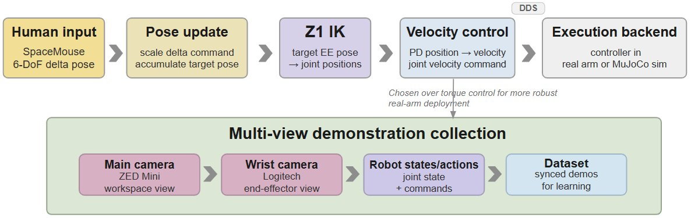
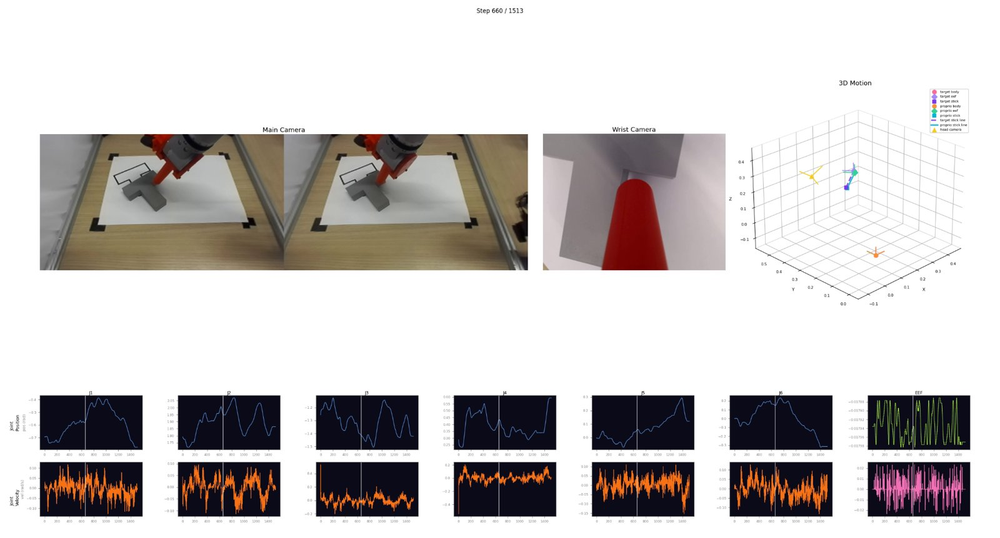
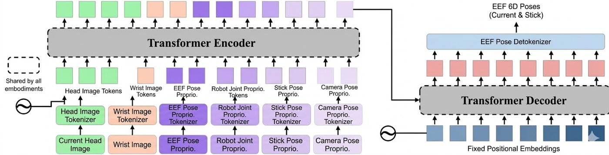

ROBOT LEARNING / MANIPULATION
Multi-View Imitation Learning for Robotic Manipulation
Robot manipulation policies can fail when camera placement changes. Improving their tolerance to new viewpoints could reduce the need to collect demonstrations and retrain policies whenever a workspace is reconfigured. Our team tested whether adding training viewpoints improved performance on a real-world pushing-T task: moving a T-shaped object into a target position and orientation.
My contribution. I developed the teleoperation and data-collection pipeline, trained manipulation policies, and deployed them on the real Unitree Z1 Pro 6-DoF arm. My work connected SpaceMouse input, inverse kinematics, synchronized camera observations, robot state, policy inference, and hardware execution.
Methods
I used SpaceMouse teleoperation to collect demonstrations that paired synchronized workspace- and wrist-camera images with robot states and action targets. A Transformer policy learned from these demonstrations using behavior cloning, cross-attention to combine inputs, and action chunking to predict sequences of commands. I trained the policy for 200K steps and deployed it on the real arm.
Results
A Transformer policy with cross-attention, behavior cloning, and action-chunk prediction.
Measured on an RTX 4060 Ti after 200K training steps; this is not the complete robot control-loop frequency.
0/21 → 9/21 successful trials after incorporating additional training viewpoints.
In the novel-view test, adding training viewpoints increased task success from 0/21 to 9/21 trials, a gain of 42.9 percentage points. Other test configurations showed different gains, so this result describes one evaluation condition rather than an overall success rate.
Discussion and limitations
The improvement supports further investigation of viewpoint-diverse demonstrations. However, each condition had only 21 trials, and the policy still failed in more than half of the novel-view trials. Larger evaluations across camera placements and tasks are needed to assess robustness beyond this setup.
Explore the system, data, and model
Real-world task and camera setup
The platform pairs the Z1 Pro arm with a workspace camera, a wrist camera, and SpaceMouse teleoperation. Demonstrations capture images together with robot states and action labels.

From human input to synchronized demonstrations
SpaceMouse commands update a target end-effector pose. Inverse kinematics and a PD layer produce joint-velocity commands, while DDS connects teleoperation, simulation, and the real arm. We used velocity control because it was more robust to deploy than the torque-control setup tested in the project.

Recorded demonstrations combine main- and wrist-camera images with end-effector pose, joint positions and velocities, stick pose, camera pose, and action targets. Poses use a common world frame and rotation-vector representation.

Learning and deployment
The policy uses modality-specific tokenizers, a Transformer backbone, and action decoding. Cross-attention combines visual and proprioceptive information, and action chunking predicts a sequence of commands. Training used 200K steps with a batch size of 128 on an A100 GPU before deployment on the real arm.

STACK Python · PyTorch · Transformers · Multi-view RGB · SpaceMouse · IK · DDS · Real-robot deployment
Team FOCUS · CMU course project